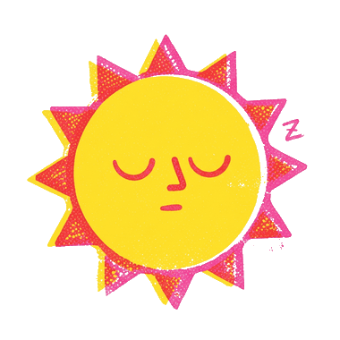
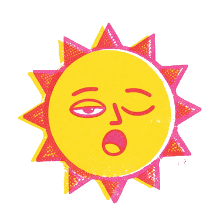
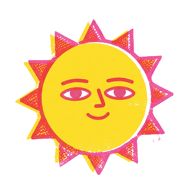
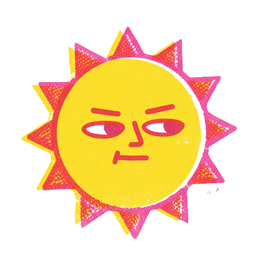
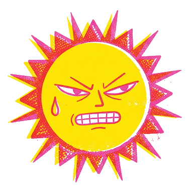
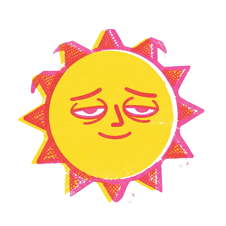

SOLA
Santa Monica · live
UV index
––
Coast © OpenStreetMap contributors · UV & sea: Open-Meteo






drag the sun –Sunrise–Today’s sun pathSunset–
Santa Monica · live
UV index
––
Coast © OpenStreetMap contributors · UV & sea: Open-Meteo






drag the sun –